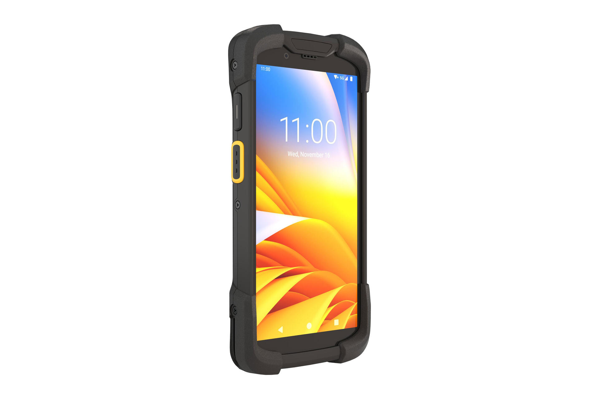
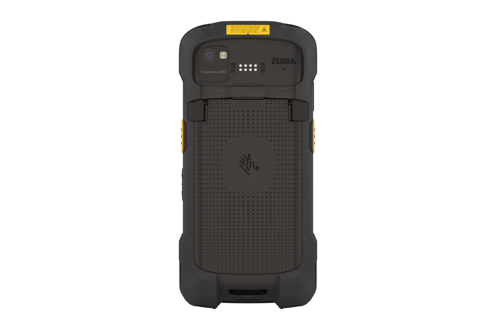

For independent service providers · TC77 → TC78
Zebra has ended sale of the TC77. Its replacement is the TC78 — quicker in the hand, longer-ranging at the scan, and supported for years to come. Peak Technologies has stock on the shelf and a program window that makes the move easier.


When you move your fleet from the TC77 to the TC78 through Peak Technologies, the purchase can ride on your existing Verizon bill through BOBO (Bill On Behalf Of). Your Peak account team confirms eligibility and details before you commit.
Six reasons
Plain answers for owners running TC77s today.
Zebra no longer sells the TC77. The TC78 is the designated replacement, so new buys and spares should move on your schedule — not the day a unit dies.
A newer Qualcomm processor opens apps, reads scans, and signs in noticeably quicker than the TC77 — seconds saved on every stop.
The TC78’s advanced-range imager reads barcodes from arm’s length to across the dock — roughly 40 feet. The TC77 is a standard-range scanner.
5G and Wi-Fi 6E on the TC78, versus 4G LTE and Wi-Fi 5 on the TC77. Headroom for the network changes already rolling out.
The TC78 runs a newer Android with a long security-support road ahead. The TC77’s update window is at its end.
A 6-inch screen versus the TC77’s 4.7 inches — easier to read at a glance — plus warm-swap battery options and USB-C charging.